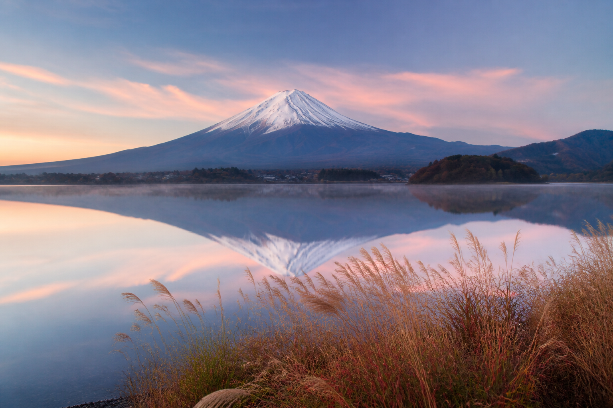
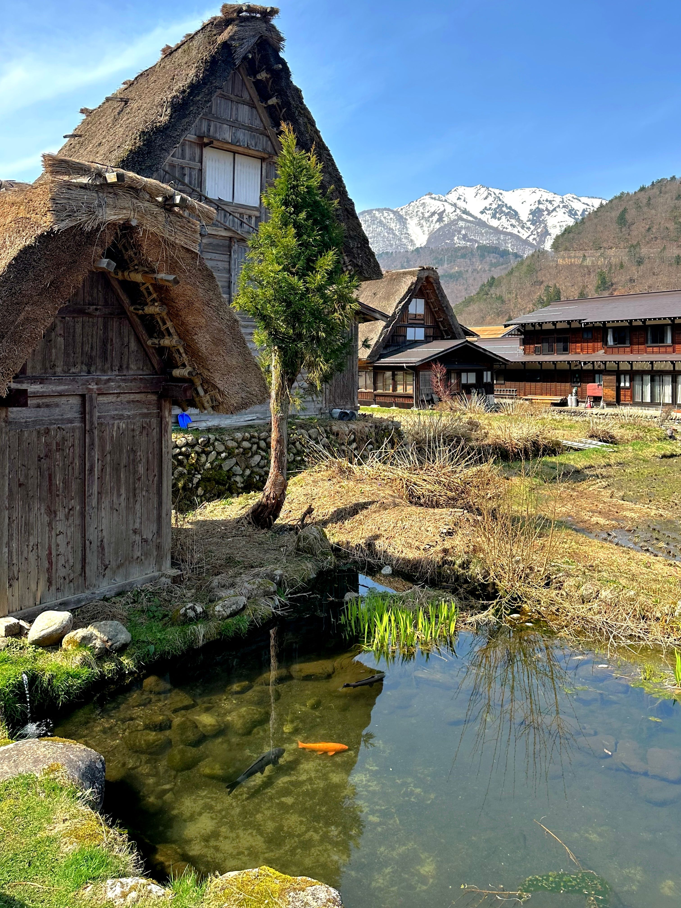
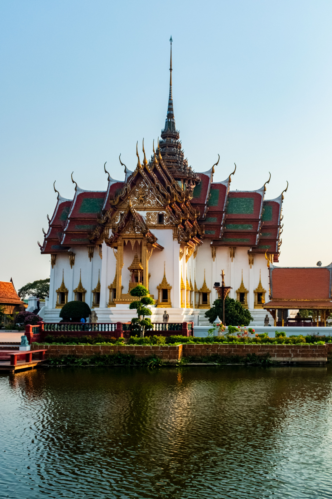
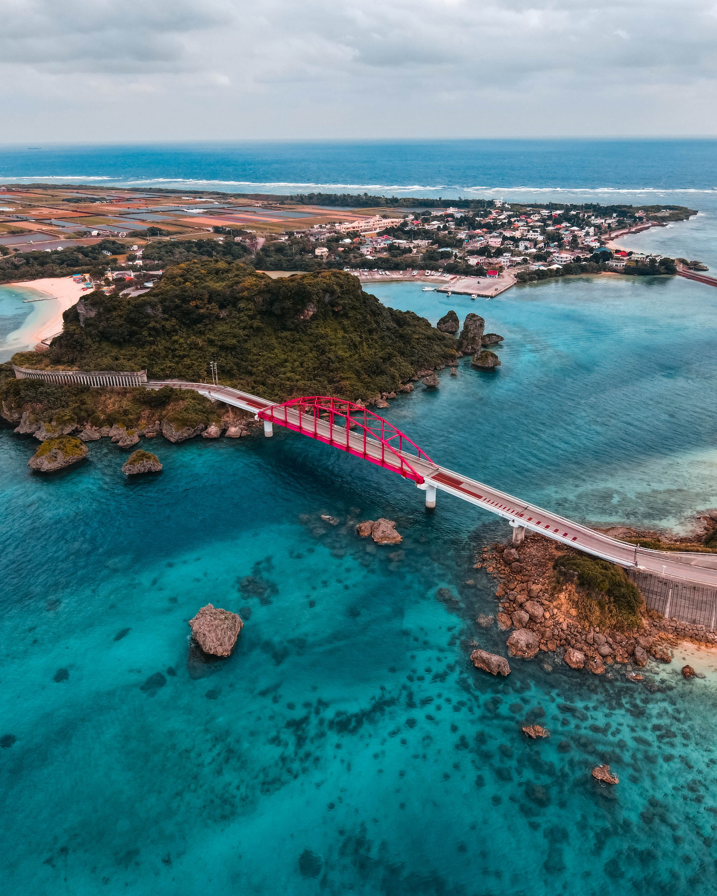
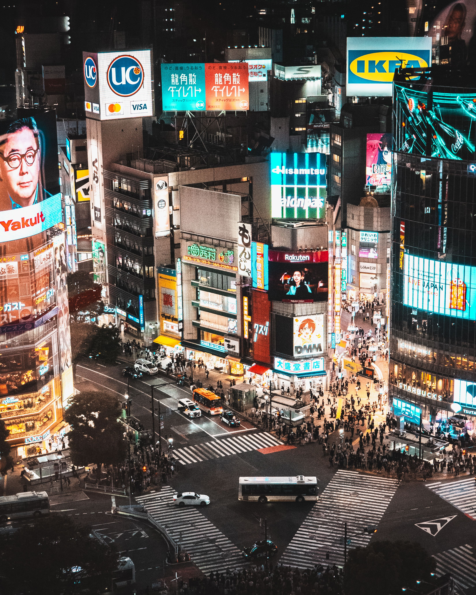
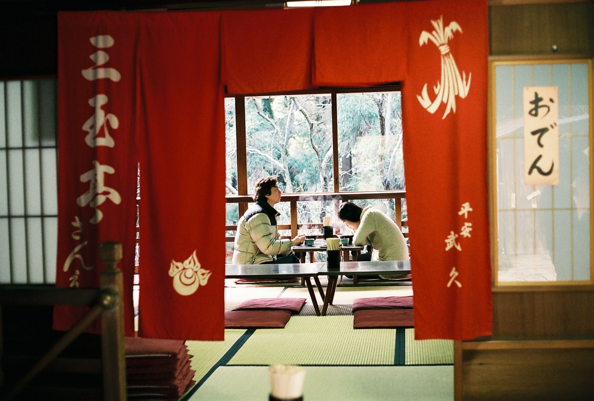
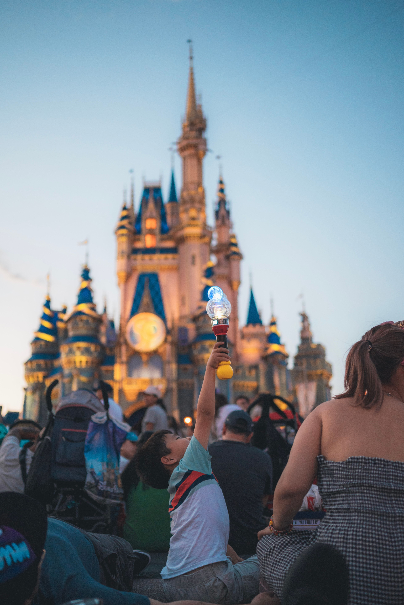
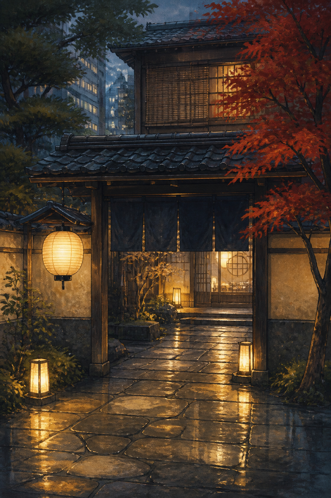
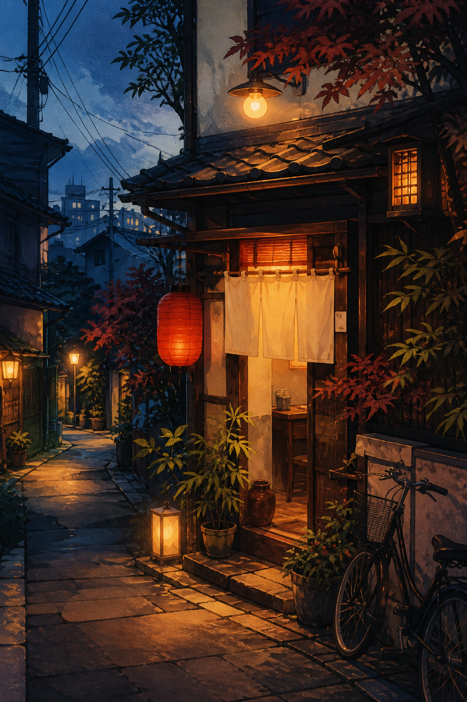

Primera llamada
En una llamada telefónica definimos fechas, presupuesto, intereses y prioridades.

Somos un equipo especializado en Japón, con experiencia en planificación de viajes y conocimiento directo del destino. Diseñamos rutas a medida según las fechas, el presupuesto, los intereses y el ritmo de cada viaje.
Conocimiento experto del destino. Analizamos cada etapa para proponer una ruta coherente y aprovechar mejor el tiempo disponible.
El resultado es una planificación clara, con recomendaciones de alojamientos, transportes, visitas y experiencias seleccionadas para cada itinerario.
Son ejemplos y un punto de partida para diseñar una ruta a medida según tus fechas, intereses y forma de viajar.

01
02
03
04
05
08
09¿TIENES JAPÓN EN MENTE?
Escríbeme por WhatsApp y pregúntame lo que quieras, sin compromiso.
Una forma clara de organizar un viaje a Japón a medida.
En una llamada telefónica definimos fechas, presupuesto, intereses y prioridades.
Organizamos destinos, alojamientos, transportes y experiencias.
Revisamos la propuesta hasta que encaje con el viaje que buscas.
Resolvemos dudas durante la preparación y, según la asesoría, también durante el viaje.
TU ITINERARIO

ASESORÍA ESENCIAL
79 €ASESORÍA SIGNATURE
EJEMPLOS DE VIAJE
No son paquetes cerrados: son puntos de partida para diseñar una ruta por Japón que tenga sentido contigo.

Reserva los alojamientos con margen: una buena ubicación cambia por completo el viaje.
No llenes todos los días: Japón también se disfruta cuando dejas espacio para improvisar.

Planifica lo esencial y deja que los pequeños descubrimientos hagan el resto.
Deja tiempo para los barrios tranquilos: ahí es donde Japón sorprende más.
HABLEMOS DE TU VIAJE
Elige el día que mejor te vaya y te contactaré para confirmar la llamada.
INSPIRACIÓN
QUIÉN ESTÁ DETRÁS
He trabajado dentro del sector y he visto de primera mano cómo una buena planificación puede cambiar completamente un viaje.
Su cultura, su gastronomía, sus ciudades y, sobre todo, la cantidad de formas diferentes que existen de vivirlo.
EMPIEZA AQUÍ
Rellena este formulario y te responderé para empezar a pensar tu viaje. No necesitas tenerlo todo decidido.
79 € por viaje
Itinerario personalizado + 30 días de acompañamiento.
No. La asesoría incluye la planificación y las recomendaciones; tú haces las reservas directamente.
Tú decides y reservas. Te ayudamos a valorar las opciones que mejor encajan con tu ruta.
Sí. Recibirás recomendaciones de alojamiento adaptadas a tu viaje y presupuesto.
Sí. Tienes 30 días para hacer consultas y ajustar la propuesta.
Precisamente ese es el objetivo: viajas por libre, con un plan claro y personalizado.
Partimos de lo que ya tienes y organizamos el resto alrededor de ello.
No. Es un precio único de 79 € por viaje.
Te responderemos para conocer tu viaje y explicarte los siguientes pasos antes de empezar.
JAPONIKO
Cuéntanos qué tienes en mente. Te ayudamos a convertirlo en un viaje que tenga sentido.
Quiero planificar mi viaje →